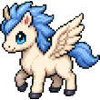

 Wind
Wind Psychic
PsychicTap a stage to read its story.
Zephyling is a small white foal with a tousled blue mane and two small feathered wings still too young for real flight - they flutter and carry it a few inches off the ground when it gets excited, no more. Its large eyes are the blue of a clear sky at noon, and it nibbles at light-flowers in the Psychic Temple, each one tasting of a sound it is just beginning to understand. When startled it vanishes behind a puff of psychic shimmer, reappearing three steps away looking surprised by its own trick.
Field note: Zephyling's wings beat exactly 440 times per minute in calm air - the same frequency as a tuned note - and temple musicians have noticed.
Light Grove. Zephyling and its family are found in the Light Grove. See everyone who lives there.
Share a Bond Food that matches its types to become friends. Zephyling loves:
A Bond Food is not a trick. It joins your spirit with the Kimuro's spirit, and only when it chooses you.
Print the Kimuro adventure packs: mazes, cards, a board game and Bond Mark medals.
See the printable packs